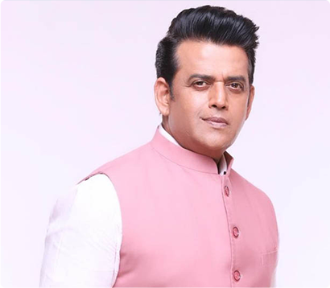
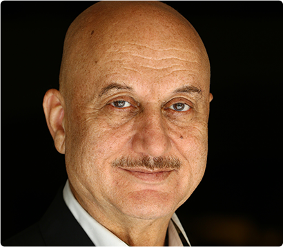
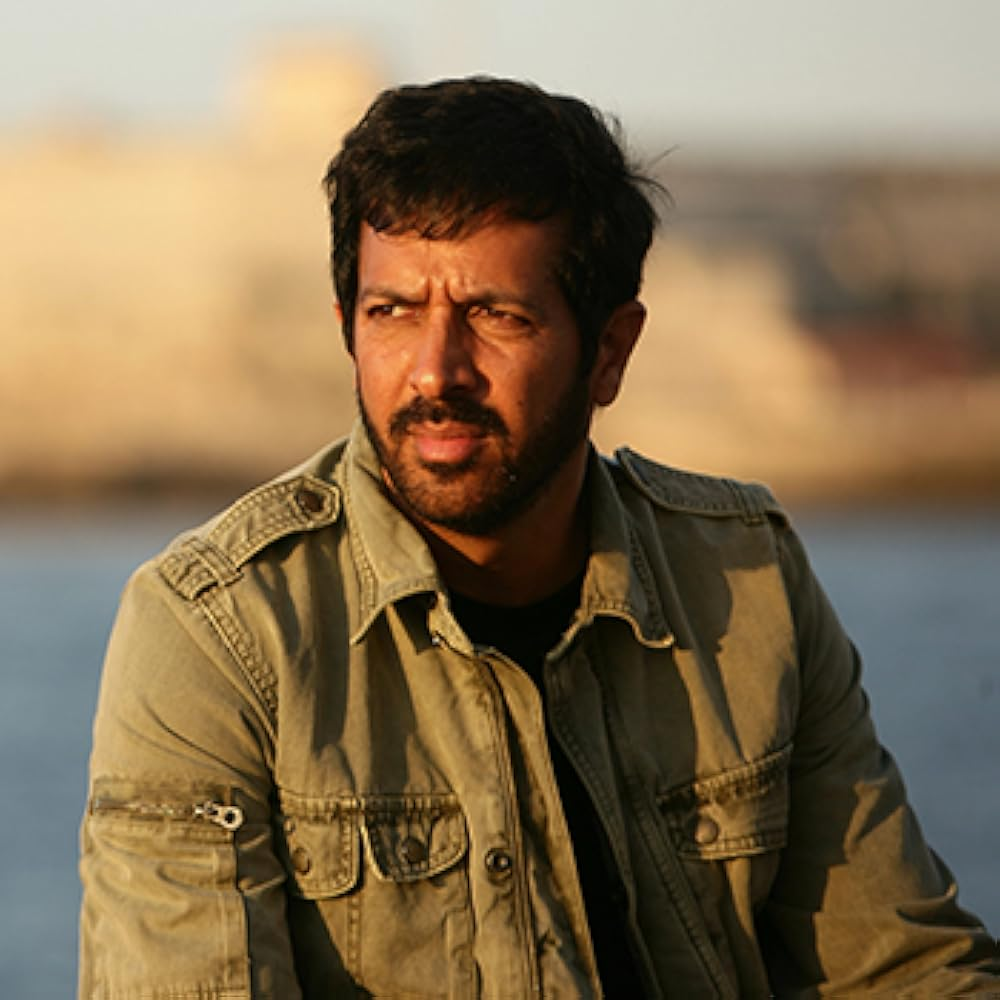
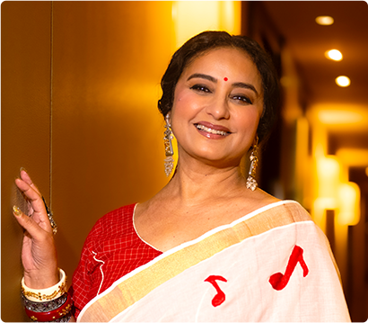
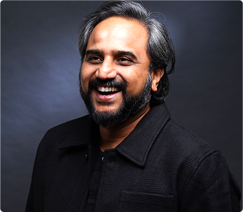

ABOUT IFFD
This inaugural edition of IFFD 2026 marks the beginning of a long-term cultural landmark, bringing together:
Curated film programming
highlighting daring visions and diverse voices
Grand public ceremonies
celebrating cinema as both a spectacle and a ritual
Industry engagement
connecting creators, collaborators, and curators
City-wide cultural activations
transforming Delhi's streets, stages and screens to become part of a living cinematic experience.
Advisory Board

Rakeysh Omprakash Mehra – Festival Director
Director
Rakeysh Omprakash Mehra is an acclaimed filmmaker known for directing iconic films including Rang De Basanti, Delhi-6, and Bhaag Milkha Bhaag. Winner of National and Filmfare Awards for Best Director, his film Rang De Basanti was India's Oscar entry and received a BAFTA nomination. His works have been showcased at Venice, London, Busan, and Chicago film festivals. In 2024-25, he served as Chairperson of the International Jury at the 56th International Film Festival of India (IFFI Goa), leading the distinguished panel in selecting the Golden Peacock winner. As Festival Director of IFFD 2026, Mehra brings his visionary approach to establishing Delhi as a global cinema hub.

Ajay Bijli – Co-Chair
Founder, PVR Cinemas
Ajay Bijli is the visionary entrepreneur behind PVR Cinemas, India's largest and most influential cinema chain. He revolutionized the Indian moviegoing experience by introducing the multiplex concept and premium theater formats, transforming how audiences engage with cinema. Under his leadership, PVR became a household name, expanding across the country and setting new standards for exhibition quality, technology, and customer experience. As Chairman and Managing Director, Bijli continues to drive innovation in film distribution and exhibition infrastructure. A committed stakeholder in Indian cinema's ecosystem, he plays a crucial role in shaping theatrical exhibition's future, supporting diverse content, and ensuring cinema remains a vibrant cultural experience for audiences nationwide.
Manoj Tiwari
Actor, Singer & Member of Parliament
Manoj Tiwari is a multifaceted personality—Bhojpuri cinema superstar, acclaimed singer, and three-term Member of Parliament from North East Delhi. Starting his career with the blockbuster Sasura Bada Paisawala (2003), he became one of Bhojpuri cinema's biggest stars, appearing in 75+ films. His iconic song "Jiya Ho Bihar Ke Lala" from Gangs of Wasseypur achieved pan-India popularity. Transitioning to politics, Tiwari joined BJP in 2014, winning consecutive Lok Sabha elections and serving as Delhi BJP President (2016-2020), leading the party to historic MCD victory in 2017. His unique blend of entertainment industry credibility and grassroots political connect makes him an influential cultural and political voice.

Ravi Kishan
Actor & Member of Parliament
Ravi Kishan is a celebrated actor and public figure with over 30 years in Indian cinema. His dynamic performances have won him devoted fans across Hindi and Bhojpuri films, establishing him as one of regional cinema's most recognizable faces. Beyond the silver screen, Ravi has made his mark as a successful producer, demonstrating entrepreneurial vision within the entertainment industry. Currently serving as a Member of Parliament, he channels his passion for public service into legislative work, advocating for the arts and cultural sectors. His dual commitment to cinema and governance reflects a rare blend of artistic excellence and civic responsibility, making him an influential voice in both domains.
Kartikeya Sharma
Founder, iTV Network & Member of Parliament
Kartikeya Sharma is the Founder of iTV Network and a Member of Parliament (Rajya Sabha). A pioneering media entrepreneur, he has built a formidable presence across news, digital, and entertainment platforms through India News, NewsX, and The Sunday Guardian, seamlessly integrating broadcast and digital storytelling. Beyond media, he leads the NXT platform and spearheads NaMo Shakti Rath, the world's largest AI-powered breast cancer screening mission. His multifaceted work spans cinema support, digital governance initiatives, youth empowerment programs, sports development, and preventive healthcare. Sharma represents a new generation of leaders who leverage media and technology for both commercial success and social impact at scale.

Khushboo Sundar
Actor, Producer, Politician & Social Activist
Khushboo Sundar is a celebrated Indian actor, producer, television host, and political leader whose four-decade career spans over 200 films across Tamil, Telugu, Kannada, Malayalam, and Hindi cinema. Beginning as a child actor at age eight, she became such a cultural phenomenon that fans built a temple in her honor in Trichy. As Managing Director of Avni Cinemax Pvt. Ltd., she has produced 25+ films with an 80% success rate. Currently serving as State Vice President of BJP Tamil Nadu and General Secretary of Small Screen Producers' Council, Khushboo is a passionate advocate for women's empowerment, LGBTQ rights, and social reform, combining artistic excellence with meaningful social impact.

Vani Tripathi Tikoo
Actor, Producer & Cultural Leader
Vani Tripathi Tikoo is an actor, producer, author, and cultural leader whose work spans theatre, cinema, and public policy. One of the youngest members of India's Central Board of Film Certification, she has performed in 50 plays, 40 television serials, and six films, trained under legendary theatre maestro Ebrahim Alkazi. She founded India's first state-run drama school in Bhopal (2011), strengthening theatre education. A Core Steering Committee member of IFFI Goa for nearly a decade, she represented India at Cannes 2022. Her recent book Why Can't Elephants Be Red? has garnered global attention. Vani champions women's political participation and youth empowerment through active socio-political engagement.

Anupam Kher
Actor, Director & Former FTII Chairman
Anupam Kher is a legendary Indian actor with over 540 films spanning four decades across Hindi and international cinema. Winner of two National Film Awards, eight Filmfare Awards, and recipient of Padma Shri (2004) and Padma Bhushan (2016), Kher's breakthrough role in Saaransh (1984) established him as one of Indian cinema's most versatile performers. His international work includes acclaimed films like Bend It Like Beckham, Silver Linings Playbook, and Lust, Caution, along with series New Amsterdam and Sense8. Founder of Actor Prepares acting academy and a published author, Kher served as Chairman of Film and Television Institute of India and the Censor Board, cementing his status as both artist and institution-builder.

Kabir Khan
Director & Screenwriter
Kabir Khan is an acclaimed filmmaker known for combining blockbuster appeal with socio-political themes. Director of cross-border successes including Bajrangi Bhaijaan and 83, he received the 2025 Iconic Gold Awards for Best Director for the biopic Chandu Champion. His films consistently address humanitarian themes while achieving commercial success, bridging the gap between meaningful cinema and mass entertainment. An experienced jury member at major film festivals, Khan actively mentors emerging talent within the industry. His documentaries and feature films demonstrate deep engagement with contemporary social issues, particularly stories of unity, sports, and cross-cultural understanding. Khan holds a significant position within Indian cinema as both creator and industry leader.

Divya Dutta
Actor & Author
With over two decades in cinema, Divya Dutta is a National Film Award and Filmfare Award-winning actor with 200+ films spanning mainstream, independent, and international cinema. Her acclaimed performances include Chhaava, Bandish Bandit, Veer-Zaara, Bhaag Milkha Bhaag, and Delhi-6. Beyond acting, she is a celebrated author whose autobiographical works Me and Ma and The Stars in My Sky have garnered critical praise. Divya seamlessly bridges Hindi and regional cinema, recently making her South debut with Mayasabha. A champion of realism and meaningful storytelling, she represents Indian cinema at global festivals, advocating for stories rooted in womanhood, identity, and authentic human experiences.

Daggubati Suresh Babu
Producer & Distributor
Daggubati Suresh Babu is a renowned producer and distributor who has shaped Telugu cinema for over two decades. Since his debut as producer with Bobbili Raja in 1999, he has delivered numerous successes under his Suresh Productions banner, including Ganesh, Coolie No.1, Malliswari, Masala, and Oh Baby. His production house, established by his legendary father D. Ramanaidu, continues the family legacy of supporting diverse storytelling in Telugu cinema. Beyond production, Suresh Babu's distribution network has been instrumental in bringing films to audiences across South India. Honored with the Andhra Pradesh state Nagireddy-Chakrapani National Award, he remains a pillar of the Telugu film industry, championing both commercial and content-driven cinema.

R. S. Prasanna
Director & Screenwriter
R. S. Prasanna is an acclaimed Indian filmmaker known for three consecutive blockbusters, including Sitaare Zameen Par starring Aamir Khan, which made history by mainstreaming neurodivergent talent on the big screen. Featured on IMDB's Top Directors 2025 list, Prasanna combines sensitive topics with humor and emotion, bringing taboo subjects into mainstream cinema. His previous blockbuster Shubh Mangal Saavdhan addressed unconventional themes, adapted from his Tamil cult hit Kalyana Samayal Saadham. A Gold Medallist from LV Prasad Film & TV Academy, he has represented India at Berlin Film Festival and received the Asian Film Academy Fellowship at Busan. He actively mentors young filmmakers through corporate workshops.

Kamakhya Narayan Singh
Filmmaker & Documentary Director
Kamakhya Narayan Singh is an acclaimed Indian filmmaker and writer working in Hindi cinema, known for socially conscious storytelling. His feature film Bhor (2021) gained international recognition, screening at 28 film festivals globally and showcasing his narrative skill with culturally relevant themes. Singh's documentary work includes the award-winning Justice Delayed but Delivered (2020), which won Best Film on Other Social Issues, exploring judicial and social reform. His other notable works include Article 35A (2017) addressing constitutional issues, and 10 Days South Africa (2020) capturing cross-cultural narratives. Beginning his career in television before transitioning to films, Singh represents a new generation of Indian filmmakers committed to meaningful, socially impactful cinema.

Shibasish Sarkar
Producer & Studio Executive
Shibasish Sarkar is Group CEO of Reliance Entertainment, overseeing films, television, OTT, animation, and gaming. With 32 years of industry experience spanning 500+ films, he has led blockbusters including Simmba, Super 30, Sooryavanshi, and Singham Again. A three-time President of the Indian Film Producer's Guild, he pioneered Reliance's digital content strategy with landmark series Sacred Games, Jubilee, and Indian Police Force. His career includes senior roles at Viacom18 and UTV Disney, focusing on business growth and strategic alliances. Holding qualifications as Chartered Accountant, Cost Accountant, Company Secretary, and MBA, Sarkar brings rare operational depth across creative and commercial verticals in entertainment.

Nimrat Kaur
Actor
Nimrat Kaur is an accomplished actress known for her breakout role in the internationally acclaimed film The Lunchbox, which earned global recognition at Cannes and other prestigious festivals. Her compelling performance in the American series Homeland brought her international prominence, showcasing her ability to navigate diverse storytelling traditions. Nimrat's body of work spans arthouse cinema, mainstream Indian films, and global streaming series, demonstrating remarkable versatility. The subtlety and emotional depth of her craft give her a compelling presence in contemporary world cinema. Known for choosing meaningful, character-driven roles over conventional stardom, she represents a new generation of Indian actors with truly global appeal and artistic integrity.

Sunit Tandon
Media Personality & Cultural Administrator
Sunit Tandon is a veteran media personality with over three decades of experience across television, radio, and film. A former Director of India Habitat Centre and current President of the Delhi Music Society, he has served as Director General of IIMC, Festival Director of IFFI Goa, and Chief Executive of Lok Sabha TV. A passionate theatre artist, Tandon has directed over 25 productions and acted in 200 plays, showcasing his deep commitment to performing arts. His film appearances include Dil Bechara, Bell Bottom, and Tejas. Tandon's distinguished career spans cultural administration, media leadership, and artistic creation, making him a respected voice in Indian cultural institutions and entertainment policy.


IFFD – Preview Committee


Festival Venue
The festival's hub-and-spoke model combines immersive screenings at flagship venues, with cultural touchpoints across the city ensuring that cinema reaches every corner of Delhi.

Primary Venue
Bharat Mandapam, Pragati Maidan
- Opening & Closing Ceremonies
- Gala Screenings & Premieres
- Film Bazaar & Industry Platforms
Bharat Mandapam, located at Pragati Maidan, New Delhi, is India's largest exhibition and convention center. Spanning 123 acres, it features modern, multi-functional halls for up to 7,000 people, an amphitheatre, meeting rooms and more. It is among the world's top venues for MICE events and exhibitions.
Additional Venues:
- Multiplex cinemas across Delhi
- Cultural and open-air spaces
- Pop-up screening zones
Contact Us
Festival Office
Innov8 OKHLA, 3rd Floor 211, Okhla Industrial Estate, Phase III, New Delhi 110020